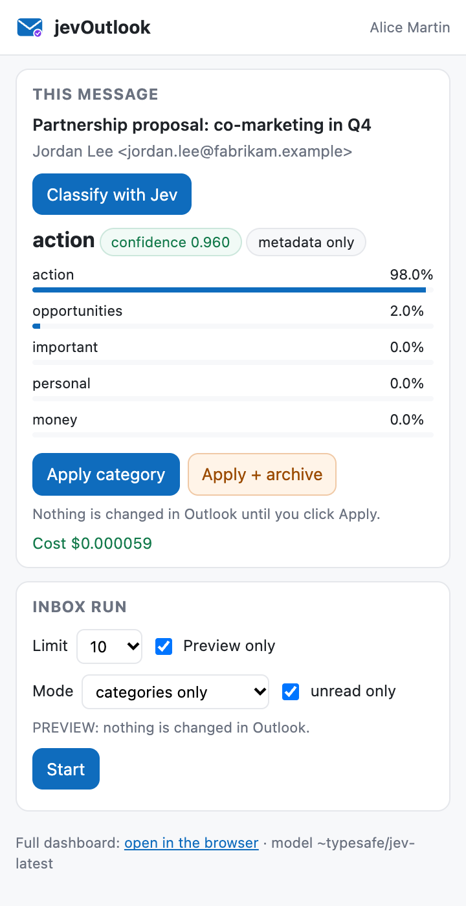
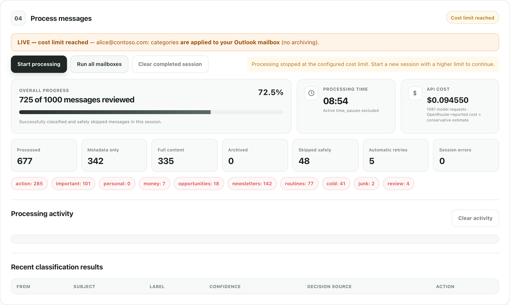
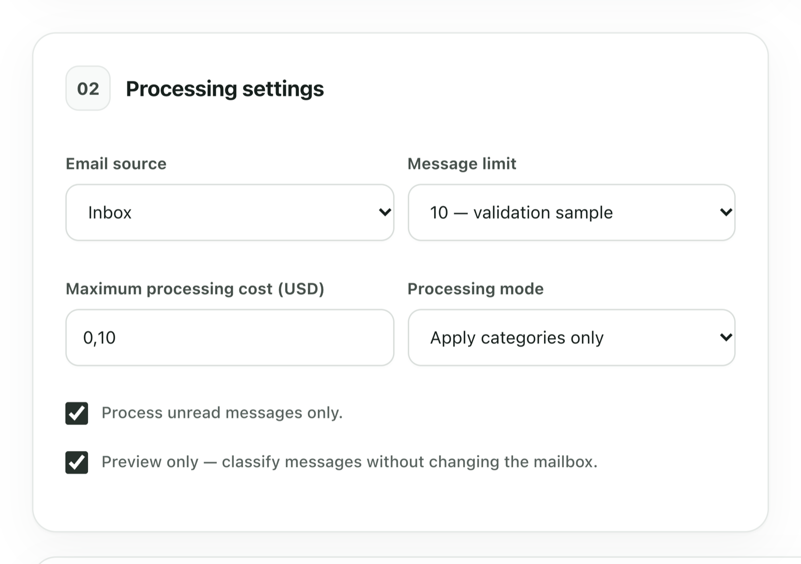

Three ways to use itTrois façons de l'utiliser三種使用方式
Dashboard, command line — or right inside OutlookTableau de bord, ligne de commande — ou directement dans Outlook儀表板、命令列——或直接在 Outlook 裡
One program on your computer, one set of categories, one state. Pick the surface that fits the moment; they can be mixed freely. Un seul programme sur votre ordinateur, un seul jeu de catégories, un seul état. Choisissez la surface qui convient au moment ; on peut les mélanger librement. 你電腦上的一個程式、一套類別、一份狀態。依當下需要選擇介面，三者可自由混用。
DashboardTableau de bord儀表板
A local web page on 127.0.0.1: add mailboxes, pick a playbook, preview ten messages, then run live batches on every mailbox.Une page web locale sur 127.0.0.1 : ajouter des boîtes, choisir un playbook, prévisualiser dix messages, puis lancer des lots réels sur toutes les boîtes.127.0.0.1 上的本機網頁：新增信箱、選擇方案、預覽十封郵件，再對所有信箱正式批次執行。
Command lineLigne de commande命令列
mailclassification run, continue, status: the same engine for scripts and scheduled runs, one mailbox or --all-accounts.mailclassification run, continue, status : le même moteur pour les scripts et les exécutions planifiées, une boîte ou --all-accounts.mailclassification run、continue、status：同一個引擎，適合腳本與排程，可處理單一信箱或 --all-accounts。
Outlook add-inComplément OutlookOutlook 增益集
A Classify button next to the message you are reading: Jev's category, its confidence, one click to apply. Install and use →Un bouton Classify à côté du message que vous lisez : la catégorie de Jev, sa confiance, un clic pour l'appliquer. Installer et utiliser →在正在閱讀的郵件旁有一個 Classify 按鈕：顯示 Jev 的類別與信心值，點一下即套用。安裝與使用 →

The add-in, in shortLe complément, en bref增益集重點
- Classify, then decide. Classifying is read-only; nothing changes in Outlook until you click Apply category (or Apply + archive when the rule allows it and the confidence reaches 0.93).Classer, puis décider. Classer ne modifie rien ; rien ne change dans Outlook avant un clic sur Apply category (ou Apply + archive si la règle l'autorise et que la confiance atteint 0,93).先分類，再決定。分類是唯讀的；在你按下 Apply category（或規則允許且信心值達 0.93 時的 Apply + archive）之前，Outlook 裡什麼都不會改變。
- An Inbox run from the pane. The same preview-first batch as the dashboard, without leaving Outlook.Un run sur la boîte de réception depuis le volet. Le même lot, aperçu d'abord, que dans le tableau de bord, sans quitter Outlook.在窗格中處理收件匣。與儀表板相同、先預覽的批次處理，不必離開 Outlook。
- Nothing hosted. The pane is served over HTTPS by MailClassification on your own computer, with the sign-in and key you already set up.Rien d'hébergé. Le volet est servi en HTTPS par MailClassification sur votre ordinateur, avec la connexion et la clé déjà configurées.不需任何代管服務。窗格由你電腦上的 MailClassification 以 HTTPS 提供，沿用你已設定好的登入與金鑰。
How it decidesComment il décide如何判定
Two looks at each message, the second only when neededDeux regards sur chaque message, le second seulement si nécessaire每封郵件看兩次，第二次只在需要時
You describe up to twelve categories in plain language. For each message, Jev is asked one question — which category fits — and answers with a choice and a probability for every option. That probability is the confidence, and it drives everything else. Vous décrivez jusqu'à douze catégories en langage courant. Pour chaque message, Jev reçoit une seule question — quelle catégorie convient — et répond par un choix et une probabilité pour chaque option. Cette probabilité est la confiance, et c'est elle qui pilote tout le reste. 你用日常語言描述最多十二個類別。對每封郵件，Jev 只回答一個問題——哪個類別合適——並給出選擇與每個選項的機率。這個機率就是信心值，其餘一切都由它驅動。
Headers and preview firstD'abord les en-têtes et l'aperçu先看標頭與預覽
Sender, recipients, subject, mailing-list and automation headers, the first 255 characters. Cheap, and enough for most mail: 79 of 100 messages in a real run.Expéditeur, destinataires, objet, en-têtes de liste et d'automatisation, les 255 premiers caractères. Peu coûteux et suffisant pour la plupart des messages : 79 sur 100 lors d'un run réel.寄件者、收件者、主旨、郵件列表與自動化標頭、前 255 個字元。便宜，而且對大多數郵件已足夠：實測 100 封中有 79 封在此定案。
The text only below the thresholdLe texte seulement sous le seuil低於門檻才讀內文
Confidence under 0.75 — or an archive decision that needs stronger proof — fetches up to 5 000 characters of the body and asks again with the full context.Une confiance sous 0,75 — ou une décision d'archivage qui exige plus de preuves — déclenche la lecture de 5 000 caractères au plus et une seconde question avec tout le contexte.信心值低於 0.75，或封存決定需要更強證據時，才擷取至多 5,000 字元的內文，帶著完整脈絡再問一次。
Checkpoint, then writeCheckpoint, puis écriture先存檔，再寫入
Every decision is saved to disk before the mailbox is touched. Your category is added to the message's existing ones — nothing removed — and archive moves come last. Interrupt at any time; resuming never pays twice.Chaque décision est enregistrée sur disque avant de toucher la boîte. Votre catégorie s'ajoute à celles du message — rien n'est retiré — et l'archivage vient en dernier. Interrompez quand vous voulez : la reprise ne paie jamais deux fois.每個決定都先寫入磁碟，再動信箱。你的類別會加到郵件既有的類別上——不移除任何東西——封存移動放在最後。隨時可中斷；續跑絕不重複付費。

MailboxesBoîtes信箱
Three kinds of mailbox, one engineTrois types de boîtes, un seul moteur三種信箱，一個引擎
The classification engine never knows which server it talks to. Each provider maps "category" and "archive" to what that mailbox natively has, so your labels show up in the clients you already use. Le moteur de classification ignore à quel serveur il parle. Chaque fournisseur traduit « catégorie » et « archiver » dans ce que la boîte possède nativement : vos libellés apparaissent dans les clients que vous utilisez déjà. 分類引擎不知道自己在和哪個伺服器對話。每種提供者把「類別」與「封存」對應到該信箱原生的機制，因此你的標籤會出現在你已經在用的用戶端裡。
Microsoft 365 & Outlook.comMicrosoft 365 et Outlook.comMicrosoft 365 與 Outlook.com
Microsoft Graph with delegated permissions: one app registration you own, shared by all your Microsoft mailboxes, then a device code typed once per mailbox. Categories are Outlook categories with a colour; archive moves to the Archive folder. Exchange Online has no password IMAP any more — this is the only honest path.Microsoft Graph avec permissions déléguées : une inscription d'application qui vous appartient, partagée par toutes vos boîtes Microsoft, puis un code saisi une fois par boîte. Les catégories sont des catégories Outlook colorées ; l'archivage déplace vers le dossier Archive. Exchange Online n'a plus d'IMAP par mot de passe — c'est la seule voie honnête.透過 Microsoft Graph 的委派權限：你自己的一個應用程式註冊，供所有 Microsoft 信箱共用，每個信箱只需輸入一次裝置代碼。類別就是帶顏色的 Outlook 類別；封存會移到「封存」資料夾。Exchange Online 已不再支援密碼式 IMAP——這是唯一誠實的做法。
Gmail
IMAP with a Google app password — no Google Cloud project, no consent screen. Categories are real Gmail labels; archive removes the message from the Inbox exactly like Gmail's own Archive button, and it stays in All Mail.IMAP avec un mot de passe d'application Google — pas de projet Google Cloud, pas d'écran de consentement. Les catégories sont de vrais labels Gmail ; l'archivage retire le message de la boîte de réception comme le bouton Archiver de Gmail, et il reste dans Tous les messages.使用 Google 應用程式密碼的 IMAP——不需要 Google Cloud 專案，也沒有同意畫面。類別就是真正的 Gmail 標籤；封存會像 Gmail 自己的封存按鈕一樣把郵件移出收件匣，並保留在「所有郵件」中。
Any IMAP serverTout serveur IMAP任何 IMAP 伺服器
Dovecot, Cyrus, Courier, most hosted mail. Categories are IMAP keywords — custom flags shown by Thunderbird, Apple Mail or Roundcube — and archive moves to an Archive folder. If a server refuses custom keywords, MailClassification says so and writes nothing.Dovecot, Cyrus, Courier, la plupart des hébergeurs. Les catégories sont des mots-clés IMAP — des drapeaux personnalisés affichés par Thunderbird, Apple Mail ou Roundcube — et l'archivage déplace vers un dossier Archive. Si un serveur refuse les mots-clés, MailClassification le dit et n'écrit rien.Dovecot、Cyrus、Courier 及大多數代管郵件服務。類別是 IMAP 關鍵字——Thunderbird、Apple Mail 或 Roundcube 都會顯示的自訂旗標——封存則移到 Archive 資料夾。若伺服器拒絕自訂關鍵字，MailClassification 會明說並且不寫入任何東西。
accounts.json.
Les mots de passe ne sont jamais à côté de la configuration. Sur macOS ils vont dans le Trousseau via l'outil système ; la connexion Microsoft est mise en cache par MSAL. Rien de secret n'est écrit dans accounts.json.
密碼絕不會和設定檔放在一起。在 macOS 上會透過系統工具存入登入鑰匙圈；Microsoft 登入由 MSAL 快取。accounts.json 裡不會寫入任何機密。
Safe by defaultSûr par défaut預設安全
Preview first, then categories, then — if you insist — archivingL'aperçu d'abord, puis les catégories, puis — si vous y tenez — l'archivage先預覽，再加類別，最後——若你堅持——才封存
- Preview by default. The first run shows a table of what would happen; nothing is written until you untick "Preview only" or pass
--live.Aperçu par défaut. Le premier run affiche un tableau de ce qui se passerait ; rien n'est écrit tant que vous ne décochez pas « Preview only » ou ne passez pas--live.預設僅預覽。第一次執行只顯示將會發生什麼的表格；除非取消勾選「Preview only」或加上--live，否則不寫入任何東西。 - Archiving needs four things at once: the archive mode, a category you marked archive-eligible, a confidence at or above a second, stricter threshold (0.93), and — in the terminal — a typed confirmation. Archived mail is moved, never deleted.L'archivage exige quatre conditions à la fois : le mode archivage, une catégorie que vous avez marquée éligible, une confiance au moins égale à un second seuil plus strict (0,93) et — dans le terminal — une confirmation saisie. Le courrier archivé est déplacé, jamais supprimé.封存需要同時滿足四個條件：封存模式、你標記為可封存的類別、信心值達到第二個更嚴格的門檻（0.93），以及——在終端機裡——輸入確認。封存的郵件只是移動，從不刪除。
- A cost cap per run. Before every model request the remaining budget is checked; the run stops at the cap and can be continued with a higher one. Actual spend comes from OpenRouter's own report.Un plafond de coût par run. Avant chaque requête au modèle, le budget restant est vérifié ; le run s'arrête au plafond et peut reprendre avec un plafond plus haut. La dépense réelle vient du relevé d'OpenRouter.每次執行都有費用上限。每次向模型請求前都會檢查剩餘預算；到達上限就停止，可提高上限後續跑。實際花費以 OpenRouter 的回報為準。
- Fails closed. An invalid model answer, an unreadable body, a vanished message or a throttled server: the message is skipped or the run pauses with everything checkpointed. The mailbox is never modified on doubt. MailClassification never deletes, never marks junk, never sends.Fermeture sûre. Réponse invalide du modèle, corps illisible, message disparu ou serveur saturé : le message est ignoré ou le run se met en pause, tout étant checkpointé. La boîte n'est jamais modifiée dans le doute. MailClassification ne supprime jamais, ne marque jamais en indésirable, n'envoie jamais.失敗即關閉。模型回答無效、內文無法讀取、郵件消失或伺服器限流時：郵件會被略過或執行暫停，且全部已存檔。有疑慮時絕不修改信箱。MailClassification 從不刪除、從不標記垃圾郵件、從不寄信。
- Nothing to undo later. Only your category is added; existing categories are kept. A message already carrying one of your categories is skipped by later runs — that is the only "marker" there is.Rien à défaire plus tard. Seule votre catégorie est ajoutée ; les existantes sont conservées. Un message qui porte déjà l'une de vos catégories est ignoré par les runs suivants — c'est le seul « marqueur » qui existe.日後無需復原。只加上你的類別；既有類別保留。已帶有你任一類別的郵件會被後續執行略過——這是唯一的「標記」。
CategoriesCatégories類別
Seven playbooks to start from, twelve rules of your own at mostSept playbooks pour démarrer, douze règles à vous au plus七套現成方案起步，最多十二條你自己的規則
A rule is a name, a criterion written in plain language and an "archive eligible" flag. The criterion is sent to Jev verbatim, so the way to fix a misclassification is to sharpen the sentence: say what belongs, then what is excluded. Une règle, c'est un nom, un critère écrit en langage courant et un drapeau « éligible à l'archivage ». Le critère est transmis à Jev tel quel : pour corriger un mauvais classement, on affine la phrase — ce qui appartient à la catégorie, puis ce qui en est exclu. 一條規則包含名稱、用日常語言寫的判準，以及「可封存」旗標。判準會原封不動送給 Jev，所以修正誤判的方法就是把句子寫得更精確：先說什麼屬於這個類別，再說什麼被排除。
| PlaybookPlaybook方案 | CategoriesCatégories類別 |
|---|---|
| Universal inbox | action-required · important-update · personal · money-and-orders · opportunities · newsletters · routine-notifications* · cold-outreach* · junk* · review |
| Founders & operators | decision-required · customer-risk · investor-and-board · team-blocker · delegatable · vendor-pitch* · review |
| Sales & business development | hot-lead · deal-action · partner-opportunity · customer-success · sales-automation · irrelevant-outreach* · review |
| Investors | founder-intro · active-deal · portfolio-action · lp-and-fund · ecosystem-update · mass-fundraising-pitch* · review |
| Recruiting & people | candidate-action · interview-scheduling · offer-and-closing · employee-sensitive · ats-automation · recruiting-vendor-pitch* · review |
| Freelancers & creators | qualified-opportunity · client-action · payment-and-contract · audience-and-community · platform-update · low-quality-collab* · review |
| Support & commerce | urgent-escalation · refund-or-billing · delivery-or-order · product-help · feedback-and-feature · automated-system-mail · review |
PrivacyConfidentialité隱私
Runs on your machine. Sends the model only what it needs to decide.Tourne sur votre machine. N'envoie au modèle que ce qu'il faut pour décider.在你的電腦上執行。只把判定所需的內容送給模型。
- No server, no account, no telemetry. The dashboard is a local page on 127.0.0.1 that rejects cross-site calls. State lives in
~/.mailclassificationwith mode 0600.Aucun serveur, aucun compte, aucune télémétrie. Le tableau de bord est une page locale sur 127.0.0.1 qui rejette les appels cross-site. L'état vit dans~/.mailclassificationen mode 0600.沒有伺服器、沒有帳號、沒有遙測。儀表板是 127.0.0.1 上的本機頁面，會拒絕跨站呼叫。狀態存放在~/.mailclassification，權限 0600。 - What the model receives for each selected message: your category names and criteria, sender, recipients, subject, date, mailing-list and automation headers, importance, the 255-character preview, and — only when the confidence policy requires it — up to 5 000 characters of text. Never attachments. One message per request, never combined with another.Ce que le modèle reçoit pour chaque message sélectionné : vos noms de catégories et leurs critères, expéditeur, destinataires, objet, date, en-têtes de liste et d'automatisation, importance, l'aperçu de 255 caractères et — seulement quand la politique de confiance l'exige — jusqu'à 5 000 caractères de texte. Jamais les pièces jointes. Un message par requête, jamais combiné à un autre.模型收到的內容（每封被選中的郵件）：你的類別名稱與判準、寄件者、收件者、主旨、日期、郵件列表與自動化標頭、重要性、255 字元預覽，以及——僅在信心政策要求時——至多 5,000 字元的內文。絕不含附件。每次請求一封郵件，從不與其他郵件合併。
- Email is untrusted input. The prompt tells the model never to follow instructions found inside a message.L'e-mail est une donnée non fiable. Le prompt interdit au modèle de suivre des instructions trouvées dans un message.郵件是不可信的輸入。提示詞明確要求模型絕不執行郵件內出現的指令。
- Your compliance review still applies. Read OpenRouter's and TypeSafe's data policies before processing sensitive mail.Votre revue de conformité reste nécessaire. Lisez les politiques de données d'OpenRouter et de TypeSafe avant de traiter du courrier sensible.你的合規審查仍然適用。處理敏感郵件前，請先閱讀 OpenRouter 與 TypeSafe 的資料政策。
InstallInstaller安裝
Three steps, then the dashboard takes overTrois étapes, puis le tableau de bord prend le relais三個步驟，之後交給儀表板
BuildCompiler建置
Install the .NET 10 SDK, clone the repository, dotnet build -c Release. One executable, mailclassification, is both the CLI and the dashboard.Installez le SDK .NET 10, clonez le dépôt, dotnet build -c Release. Un seul exécutable, mailclassification, sert de CLI et de tableau de bord.安裝 .NET 10 SDK，複製儲存庫，執行 dotnet build -c Release。單一執行檔 mailclassification 同時是命令列工具與儀表板。
ConnectConnecter連接
An OpenRouter key for the model. Then each mailbox: a Google app password for Gmail, the password for IMAP, a one-time Entra app registration and a device code for Microsoft 365.Une clé OpenRouter pour le modèle. Puis chaque boîte : un mot de passe d'application Google pour Gmail, le mot de passe pour IMAP, une inscription Entra unique et un code pour Microsoft 365.先取得 OpenRouter 金鑰給模型用。接著逐一連接信箱：Gmail 用 Google 應用程式密碼，IMAP 用信箱密碼，Microsoft 365 則一次性註冊 Entra 應用程式並輸入裝置代碼。
Preview ten messagesPrévisualiser dix messages預覽十封郵件
mailclassification ui or mailclassification run: ten unread messages, a table of what would happen, about a tenth of a cent. Tune the criteria, then go live.mailclassification ui ou mailclassification run : dix messages non lus, un tableau de ce qui se passerait, un dixième de centime environ. Affinez les critères, puis passez en réel.mailclassification ui 或 mailclassification run：十封未讀郵件、一張「將會發生什麼」的表格、約千分之一美元。調整判準，再正式執行。

LineageFiliation淵源
Built on jevMail, Jev and MailKitConstruit sur jevMail, Jev et MailKit建立在 jevMail、Jev 與 MailKit 之上
jevMail
The Gmail + Google Apps Script original by Ilia AGI (MIT): the two-stage policy, the thresholds, the budget accounting, the seven playbooks and the dashboard layout all come from it.L'original Gmail + Google Apps Script d'Ilia AGI (MIT) : la politique en deux étapes, les seuils, la comptabilité du budget, les sept playbooks et la mise en page du tableau de bord en viennent.Ilia AGI 的 Gmail + Google Apps Script 原作（MIT）：兩階段策略、門檻、預算計算、七套方案與儀表板版面皆源自於此。
github.com/ilyamk/jev-gmail-ai-spam-filter-and-labelingJev · TypeSafe
A System One decision model: it answers a Choice question with a category and a probability for every option, which is what makes confidence-aware automation possible.Un modèle de décision System One : il répond à une question Choice par une catégorie et une probabilité pour chaque option, ce qui rend possible une automatisation consciente de sa confiance.System One 決策模型：以類別加上每個選項的機率回答 Choice 問題，讓「知道自己有多確定」的自動化成為可能。
docs.typesafe.ai/primitives/choiceMicrosoft Graph · MailKit
Graph for Microsoft 365 (batched reads, category writes, archive moves); MailKit for Gmail and IMAP (labels, keywords, UID cursors). Both behind one small mailbox interface.Graph pour Microsoft 365 (lectures groupées, écriture des catégories, archivage) ; MailKit pour Gmail et IMAP (labels, mots-clés, curseurs UID). Les deux derrière une seule petite interface de boîte.Microsoft 365 走 Graph（批次讀取、寫入類別、封存移動）；Gmail 與 IMAP 走 MailKit（標籤、關鍵字、UID 游標）。兩者都藏在同一個精簡的信箱介面之後。
github.com/jstedfast/MailKit